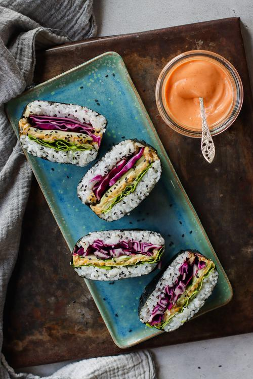

Vegan Onigirazu: Rice Sandwiches

You might have heard of onigiri, a Japanese rice ball wrapped in seaweed, that can be filled with all kinds of tasty things. Onigirazu, on the other hand, is filled more generously and is shaped into a flattened square resembling a sandwich, which makes it the perfect lunch to take with you on the go. For this sandwich, we're making a filling that resembles the taste of tuna salad, but veganized.
Ingredients
- 1½ cups (300 g) uncooked Japanese short-grain rice
- 2 cups (328 g) cooked chickpeas
- 4 Tbsp (36 g) chopped pickles
- 4 Tbsp (60 mL) vegan mayonnaise
- 3 Tbsp (30 g) minced onion
- 2 Tbsp (30 mL) ketchup
- 1½ Tbsp (23 mL) rice vinegar (optional)
- 1 tsp (5 g) granulated sugar (optional)
- ¼ tsp (2 g) salt (optional)
- 6 (12 g in total) nori seaweed sheets
- 0.5 (100 g in total) cucumber, thinly sliced using a potato peeler
- ½ cup (35 g) shredded red cabbage
- 6 (48 g in total) butter lettuce leaves
Directions
- Cook the rice according to the package instructions.
- In a large bowl, use a fork to mash the chickpeas. Then add the mayo, onion, pickles, and ketchup and mix to combine.
- Optional step: to make flavoured rice, add the rice vinegar, sugar, and salt to a small bowl and mix until the sugar has dissolved completely
- When the rice is cooked, transfer it to a large shallow bowl to cool off slightly. If you chose to make the vinegar mixture, pour it over the warm rice and gently stir it into the rice. Be careful not to over-stir.
- Take a nori sheet and lay it out with the point towards yourself and rough side up. Place a bowl of water next to you for dipping your fingers into.
- Wet your fingers with a little bit of water so that the rice won't stick to your hands as much. Scoop out a packed ⅓ of a cup of sushi rice and place it in the middle of the nori sheet. Use your hands to shape it into a square of ½ inch (1 cm) thickness. Form the square such that the flat side is facing you.
- On top of the rice square, add a layer of lettuce, followed by 3 packed tablespoons of the chickpea mixture. Using the back of a spoon, spread out the chickpea mixture to align with the shape of the rice underneath it.
- Then add on top a single layer of sliced cucumber and red cabbage.
- Dip your fingers in more water, and then scoop up another ⅓ of a cup of sushi rice. Add this scoop into the palm of your hand, and use your fingers to form another rice square about ½ inch (1 cm) thick. Gently place this on top of the sandwich. Alternatively, you can place this rice right on top of the pile of veggies and shape it into a square when the rice is on the stack. It might fall apart a little bit this way, but don't worry too much about it. It doesn't need to be perfect.
- Fold in two opposite points of the nori sheet so that they meet on top of the rice, and use a bit of water to help them stick together where they meet.
- Then, as if wrapping a present, tuck in and then fold over and the other two points to fully enclose the rice and fillings inside the nori. Use a little bit of water to close and seal the rice sandwich. Set it aside for 5 minutes while preparing the remaining sandwiches.
- Cut the onigirazu in half using a sharp, slightly wet knife which helps the rice from sticking to the knife. Garnish with black sesame seeds and serve with sriracha mayo and soy sauce!